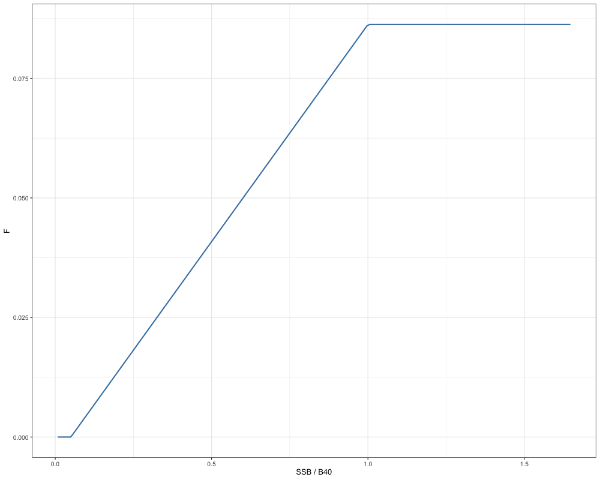
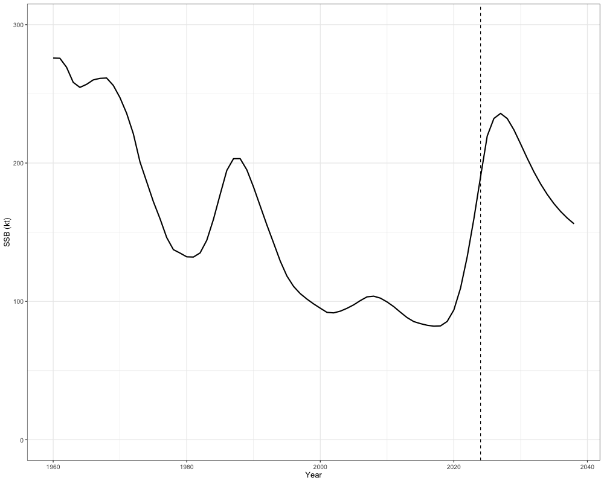
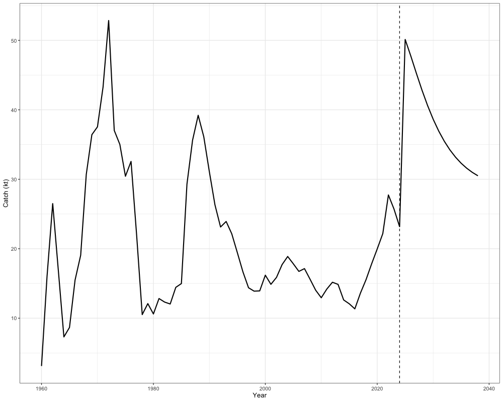
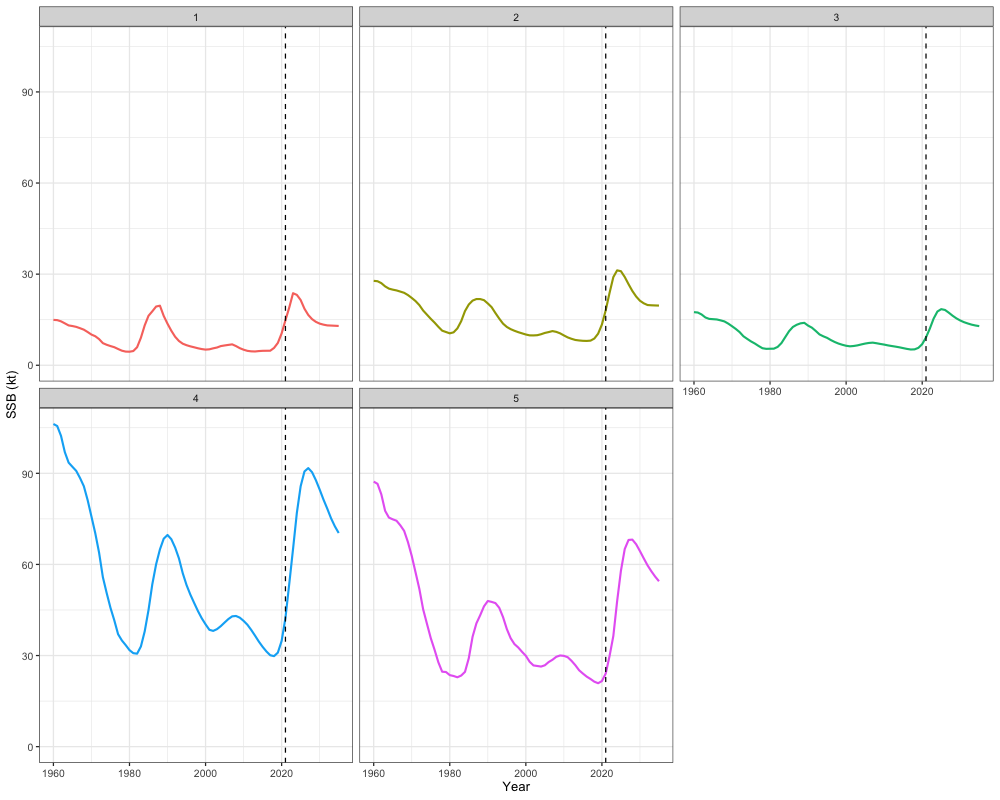
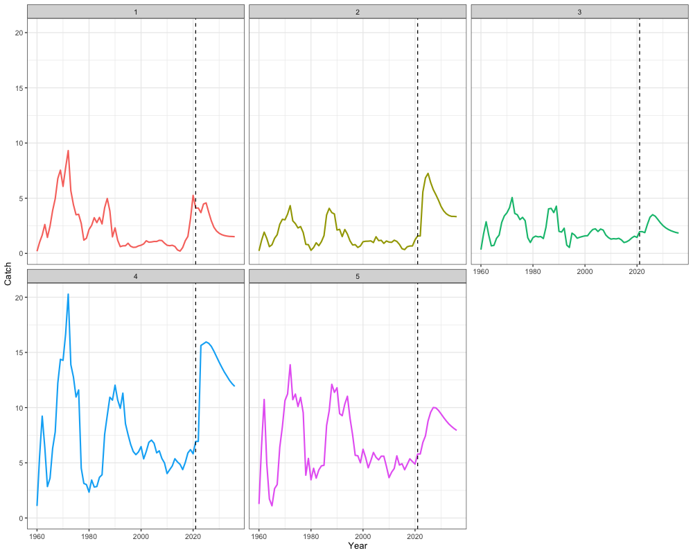
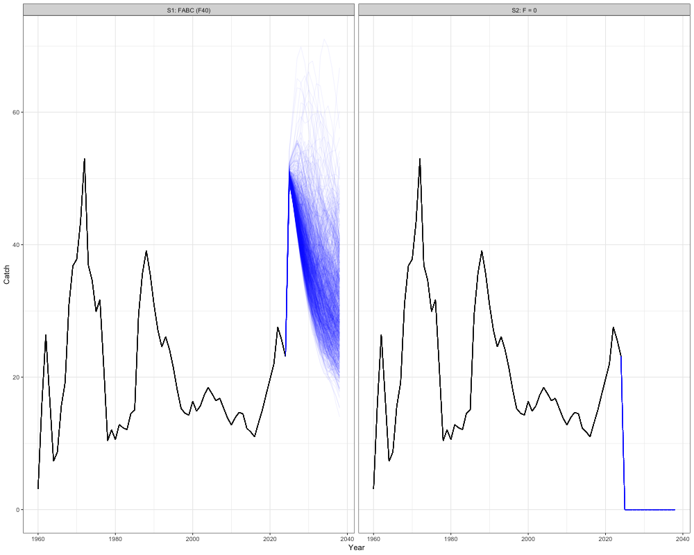

Deriving Reference Points, Catch Advice, and Projections
i_reference_points.Rmd
# Load in packages
library(SPoRC)
library(here)
library(RTMB)
library(ggplot2)
library(dplyr)
library(tidyr)
library(purrr)Several options exist for deriving management reference points and
catch advice in SPoRC. In this vignette, we will first
discuss the mathematical details for deriving different management
reference points, and then demonstrate how catch advice might be
developed with estimated reference points.
Reference Points
Deriving reference points in SPoRC is generally divided into single-region and multi-region reference points, along with spawning potential ratio () and maximum sustainable yield () reference points. In the following, we will discuss the mathematical details pertaining to these key management quantities.
Single Region
Single-region reference points can currently be derived for reference points, which estimate the fishing mortality rate that reduces spawning biomass per recruit () to of the unfished level. Additionally, reference points based on a Beverton-Holt relationship, which estimate the fishing mortality rate that maximizes long-term yield, can also be derived if density-dependence is assumed.
Spawning Potential Ratio
To derive reference points, a target percentage must be specified, representing the under fishing relative to the unfished level. Following that, several additional quantities are needed to compute these reference points. These include:
- the relative fishing mortality between fishery fleets (),
- fleet-specific fishery selectivity (),
- natural mortality for females (),
- spawning weight at age for females (),
- maturity at age for females (),
- spawn timing (),
- estimated recruitment values (),
- the female recruitment sex ratio (),
- recruitment age (), and
- the first year in the recruitment vector () to be used for mean recruitment calculations.
For relative fishing mortality between fleets, the terminal year is utilized for these calculations. In contrast, estimates based on a user-defined period (; e.g., three-year average) are used for natural mortality, weight at age, maturity at age, and fleet-specific selectivity.
reference points are then derived by initially setting numbers per-recruit at the female recruitment sex-ratio:
where and are the fished and unfished numbers at age per-recruit, respectively. Subsequent numbers at age per-recruit are then computed with an exponential mortality model, where fished numbers at age per-recruit are decremented with both natural and fishing mortality, while unfished numbers at age per-recruit are only decremented with natural mortality. For , this is computed as:
where represents the estimated fishing mortality rate that reduces the to , relative to the unfished level. For , this is defined as:
can then be converted to fished (with the following equation:
Similarly, can be converted to unfished (:
The rate can then be defined as the fraction of and :
can then be solved for using a non-linear function minimizer by minimizing the following criteria:
Biological -based reference points () can then be computed as:
where is multiplied by mean recruitment over a user-defined period (i.e., ).
Maximum Sustainable Yield (Beverton-Holt)
Deriving based reference points using a Beverton-Holt stock recruitment relationship involves maximizing the equilibrium yield per recruit () and requires several additional inputs. These inputs include:
- the relative fishing mortality between fishery fleets (),
- fleet-specific fishery selectivity (),
- natural mortality for females (),
- spawning weight at age for females (),
- maturity at age for females (),
- spawn timing (,
- estimated recruitment values (),
- the female recruitment sex ratio (),
- an estimate of virgin recruitment (), and
- an estimate of steepness ().
reference points can then be derived using the standard per-recruit calculations, where the initial number of fished and unfished individuals are set at the female recruitment sex ratio:
The numbers-at-age can then be decremented following an exponential mortality model. For , this is given by:
where here represents the fishing mortality that would result in equilibrium yield being maximized. For , this is defined as:
is then computed using Baranov’s catch equation:
where is the catch-at-age per-recruit resulting from Baranov’s catch equation. Equilibrium recruitment can then computed using the Beverton-Holt stock recruitment relationship. Estimates of equilibrium recruitment are needed to convert per-recruit quantities to yield and (the biomass that would achieve ). Here, we first and , which are necessary quantities in the Beverton-Holt stock recruitment relationship:
Equilibrium recruitment () can then be derived with the following equation:
Yield and is then derived by multiplying the and by an estimate of equilibrium recruitment:
Lastly, is solved for using a non-linear function minimizer by minimizing the following criteria (maximizing yield):
Multi-Region
In general, multi region reference points can be computed in a similar manner as single region reference points. The additional complication when calculating spatial reference points includes the additional region subscript for all quantities, as well as the potential need to account for movement processes.
Spawning Potential Ratio
Independent
In the case where independent spatial regions are assumed (i.e., no movement occurs among regions), rates can be calculated independently for each region, which results in region-specific and estimates. All calculations are derived in the same manner as computing rates in the single region case, with the exception that an additional subscript is added to all demographic rates. Following that, can then be solved for by minimizing the following criteria for each region:
Regional biological -based reference points () can then be derived by multiplying by regional mean recruitment over a user-defined period and the recruitment sex-ratio:
Global
In contrast to computing reference points when assuming independent spatial dynamics, rates can also be computed globally, where movement occurs among regions. Given the assumption of global rates, this results in a global estimate, but regional estimates of because mean recruitment estimates are defined on a regional scale. Thus, the global solution results in a that reduces the global to of its unfished value, such that the aggregate spawning biomass reaches equilibrium at if applied over the long-term. However, this solution does not result in each region equilibrating at . Note that the same value of is applied to each region in the global case.
Deriving global reference points requires a different set of inputs. These include:
- the relative fishing mortality between fishery fleets (),
- fleet-specific fishery selectivity (),
- natural mortality for females (),
- spawning weight at age for females (),
- maturity at age for females (),
- a matrix of movement values (),
- spawn timing (),
- estimated recruitment values (),
- the female recruitment sex ratio (),
- the recruitment proportions (apportionment) by area (),
- recruitment age (), and
- the first year in the recruitment vector () to be used for mean recruitment calculations.
Global reference points are calculated by first setting the regional numbers-at-age per-recruit model to the estimated recruitment apportionment parameters () multiplied by the recruitment sex ratio, which sum to 1:
where and are the regional numbers-at-age per-recruit under fished and unfished conditions, respectively. Following the initialization of these quantities, movement dynamics are then applied:
In the above expressions, denotes the number of modeled ages () multiplied by 10. For example, if 30 ages are modeled, then . This extension enables iterative propagation of the plus group under movement. For , all demographic and fishery quantities are held constant at the values for the last modeled age (). Following the application of movement, an exponential mortality model is then applied. is expressed as:
For , this is given by:
Regional fished and unfished numbers-at-age per-recruit can then be converted to SSBPR quantities. For regional fished SSBPR (, this is written as:
Regional unfished ( is computed in a similar manner:
The global rate is then defined as:
can then be solved for using a non-linear function minimizer by minimizing the following criteria for global :
Biological -based reference points are assumed to be regional () and are derived by multiplying by regional mean recruitment over a user-defined period:
Thus, the global calculations result in a global and regional estimates.
Maximum Sustainable Yield (Beverton-Holt)
Similar to deriving spatial reference points for rates, -based reference points assuming a Beverton-Holt stock recruitment relationship can be derived either assuming independent populations without movement or a global population with movement processes incorporated. In cases where density-dependence is defined locally (i.e., area-specific stock-recruitment curves), local -based reference points can also be derived (Kapur et al., 2021).
Independent
In the case where independent spatial regions are assumed, region-specific and estimates can be obtained. In general, all calculations are derived in the same manner as equations described for computing in a single region case, with the exception that demographic rates and fishery selectivity additionally include a region subscript. Notably, in these calculations, virgin recruitment is considered to be regional to compute equilibrium recruitment and is derived in the following manner:
can then be solved for by minimizing (maximizing) yield for each region independently:
and can then be written as:
Global
In a spatial context, global explicitly accounts for movement dynamics and results in a global estimate, but regional estiamtes of because recruitment parameters are defined regionally. Thus, global results in a reference point that achieves for the entire population if is applied to each region, but does not ensure that each region equilibrates at .
The following inputs are required for computing global :
- the relative fishing mortality between fishery fleets (),
- fleet-specific fishery selectivity (),
- natural mortality for females (),
- spawning weight at age for females (),
- maturity at age for females (),
- a matrix of movement values (),
- spawn timing (),
- the female recruitment sex ratio (),
- an estimate of virgin recruitment (),
- the global steepness value to be used, which is taken as the mean across all regions if steepness is estimated to be regional, consistent with the definitions of global density dependence (), and
- the recruitment proportions (apportionment) by area ().
Using the standard per-recruit computations, global reference points are calculated by first setting the regional numbers-at-age per-recruit equal to the estimated recruitment apportionment parameters () multiplied by the female recruitment sex ratio, which sum to 1:
After the numbers-at-age per-recruit quantities are initialized, Markovian movement dynamics are applied:
can then be projected forward as:
For , this is given by:
Baranov’s catch equation is then invoked to compute regional :
Regional equilibrium recruitment is then computed using the Beverton-Holt stock recruitment relationship. To first derive these quantities, regional fished and unfished numbers-at-age per-recruit need to be converted to SSBPR quantities. For regional fished SSBPR (, this is written as:
Regional unfished ( is computed in a similar manner:
Calculations for equilibrium recruitment then follow as:
Yield and are calculated as:
can then be solved for using the following:
where the system wide yield is minimized (or maximized).
Local
A key challenge in estimating local spatial reference points (i.e., meta-population dynamics) is that combinations of local fishing mortality rates can sometimes be non-identifiable, because multiple combinations of local reference points can produce similar solutions. However, as highlighted by Kapur et al., 2021, local spatial reference points under density-dependence can potentially be estimated by tracking area-specific yields resulting from a single recruit in each spawning area. This allows the yield surface to be defined and can be used to compute local reference points such as and .
The following inputs are required for computing local :
- the relative fishing mortality between fishery fleets (),
- fleet-specific fishery selectivity (),
- natural mortality for females (),
- spawning weight at age for females (),
- maturity at age for females (),
- a matrix of movement values (),
- spawn timing (),
- the female recruitment sex ratio (),
- an estimate of global virgin recruitment (),
- the local steepness value to be used (),
- the recruitment proportions (apportionment) by area (), which partitions out the estimate of global virgin recruitment.
To ensure identifiability, quantities are tracked by origin region () and destination region (). Using standard per-recruit calculations, each region is initialized with one female recruit (i.e., the recruitment sex ratio):
Markovian movement dynamics are then applied:
can then be projected forward as:
For , this is given by:
Using Baranov’s catch equation, area-specific can be calculated as:
Regional equilibrium recruitment in each destination is computed by solving a non-linear Beverton-Holt stock-recruitment relationship that ensures internal consistency. To derive these quantities, regional fished and unfished numbers-at-age per-recruit are converted to SSBPR quantities. For regional fished SSBPR (, this is written as:
Regional unfished ( is computed in a similar manner:
Next, define the components of a Beverton-Holt stock recruitment function:
Equilibrium recruitment in the destination region () is then defined as a function of contributions from all origin regions ():
where is the fished equilibrium in destination generated by contributions from all origin regions. The aforementioned equation is a non-linear system and does not have an analytical solution. Thus, an iterative solution is obtained using Newton-Raphson’s method. Although the function is expressed in terms of destination recruitment, it is the origin recruitment that is iteratively solved for. Specifically, Newton-Raphson’s method adjusts until the contributions from all origins result in self-consistent values.
Total yield () and yield in the destination region () is then defined as:
Lastly, regional estimates of are solved for by minimizing total yield:
where the system wide yield is minimized (or maximized).
Deriving Catch Advice and Projections
A core part of the assessment process is to convert reference point estimates into catch advice. In the following sections, we will mathematically describe how catch advice is derived, and proceed to provide code examples for demonstration. To conduct projection from the terminal year, users must define the following quantities:
- Terminal year estimates of numbers-at-age,
- A user defined period of of recruitment values to use,
- A user defined period of weight-at-age values to use for projections,
- A user defined period of natural mortality-atage values to use for projections,
- A user defined period of maturity-at-age values to use for projections,
- A user defined period of fishery selectivity values to use for projections,
- A user defined period of movement values to use for projections,
- Terminal year estimates of fishing mortality,
- Fishing mortality rate to use to decrement the population,
Optionally, users can define:
- Biological reference points to use to project fishing mortality in the subsequent years, if a harvest control rule is utilized, and
- A function describing a harvest control rule.
In the first year of the projection period, projected fishing mortality is determined with estimates of fishing mortality in the terminal year of the assessment:
Total mortality can then be computed as:
Similarly, projected numbers at age in the first year utilizes estimates of numbers at age in the terminal year of the assessment, for which movement has already been applied. An exponential mortality model is then used to determine the numbers at age in the next year ():
Quantities of spawning stock biomass can then be computed as:
Additionally, quantities of projected catch can be derived using Baranov’s catch equation:
Fishing mortality in the next year can then be projected forward using either a harvest control rule, or projected forward using user inputs:
where is a harvest control function that takes the inputs , (biological reference points), and (a fishery reference point). Alternatively, can be a user defined matrix of fishing mortality rates to use during the projection period across regions. Projected fishing mortality is then summed with natural mortaltiy to compute the projected total mortality in a given projection year.
Recruitment dynamics are then projected in each year following the initial projection year. In particular, several recruitment projection options are availiable. These include both deterministic predictions as well as the ability to incorporate stochasticity into recruitment projections.
In particular, deterministic recruitment has the option to be
projected forward as zero:
where no recruitment occurs. Deterministic recruitment can also be
projected forward using mean recruitment (mean_rec) from a
matrix of estimated recruitment values from the assessment model
supplied by the user:
Alternatively, users can also specify a Beverton-Holt stock
recruitment function (bh_rec) to be used for deterministic
recruitment projection, which then requires users to supply the
necessary parameter inputs. In the case where local recruitment is
specified, this is computed as (i.e., metapopulation dynamics):
By contrast, if global recruitment is specified, this is computed as:
where density-dependence occurs globally, and a recruitment apportionment parameter is utilized to partition global recruits in a given year.
Lastly, users can specify recruitment projections to be stochastic,
wherein an inverse Gaussian (inv_gauss) distribution
parameterized based on estimated recruitment values from the assessment
model is utilized to project recruitment into the future:
For each year a random draw is made from a standard normal distribution, which is then transformed:
Then, a draw is conducted , and simulated recruitment is defined as:
Thus, this inverse gaussian mixture ensures the simulated values have approximately the correct mean and variability based on historical recruitment values.
After recruitment processes occur, the usual dynamics are then applied to project the population forward. Here, movement of individuals first occurs:
Following movement, which is only applied in projected years , as it has already been accounted for in the terminal year estimates of numbers at age, the exponential mortality model is applied. Projected spawning stock biomass and catch are then derived. Fishing mortality in subsequent years is updated accordingly. This sequence of steps is repeated until the specified number of projection years is reached. Thus, catch advice for the year following the terminal assessment year corresponds to the projected catch in projection year 2 (i.e., ).
Code Demonstration
In the subsequent sections, we will demonstrate how reference points,
catch projections, catch advice, and stochastic projections can be
derived and conducted using SPoRC. These features rely on
users to have a report file from a SPoRC model, and we have
generally coded this in a way that there is flexibility for users to
define how projections are done.
Getting Reference Points
Single Region
To illustrate how reference points are derived, we begin by
extracting the report file from the single-region sablefish case study
(sgl_rg_sable_rep). We then call the Get_Reference_Points function to
calculate the reference points. In the example below, we estimate the
and
values in a single-region context. This requires passing the sablefish
data file (sgl_reg_sable_data) to the data argument, the
report file to the rep argument, and setting the SPR rate
(SPR_x) to 0.4. We also specify that the reference point is
SPR-based and pertains to a single region. Additional inputs include the
first year of recruitment used for calculating
,
the recruitment age (which excludes the last rec_age years
when computing the mean), the timing of spawning, and the sex ratio used
in the
calculation. Note that the sablefish example does not utilize a stock
recruitment relationship. However, if a Beverton-Holt stock recruitment
relationship is utilized and users want to estimate MSY-based reference
points, this can be derived by setting what = 'BH_MSY'.
data("sgl_rg_sable_rep") # read in single region report
data("sgl_rg_sable_data") # read in single region data
# single area model
sgl_ref_pt <- SPoRC::Get_Reference_Points(data = sgl_rg_sable_data, # data file
rep = sgl_rg_sable_rep, # report file
SPR_x = 0.4, # spr rate
type = 'single_region', # single region reference point
what = 'SPR', # SPR reference point
calc_rec_st_yr = 20, # first year to calculate mean recruitment
rec_age = 2, # exclues the last rec_age years when computing mean recruitment
t_spwn = 0, # spawn timing
sex_ratio_f = 0.5 # recruitment sex-ratio for females
)
sgl_ref_pt$f_ref_pt # F40
#> [1] 0.08625413
sgl_ref_pt$b_ref_pt # B40
#> [1] 121.3814Note that the sablefish example does not utilize a stock recruitment
relationship. However, if a Beverton-Holt stock recruitment relationship
is utilized and users want to estimate MSY-based reference points, this
can be derived by setting what = 'BH_MSY'.
Multi Region
In the following, we will demonstrate how spatial reference points
can be derived. In general, this is similar to the single region case,
except that a spatial model and associated report files will be needed
(report file needs to be spatially-explicit). Again, we will use the
five-region sablefish case study as an example, where we will estimate
both independent SPR rates and global SPR rates. In contrast to the
single region case, type would now need to be specified as
multi_region. Additionally, for independent SPR rates where
movement dynamics are ignored, what is now set at
independent_SPR. All the other arguments are defined the
same as the example above. Given that these are treated as independent
populations, fishery reference points and biological reference points
are region-specific and can be applied accordingly.
data("mlt_rg_sable_rep") # read in multi region report
data("mlt_rg_sable_data") # read in multi region data
# multi region model with independent SPR
mlt_ref_pt_indp <- Get_Reference_Points(data = mlt_rg_sable_data, # data file
rep = mlt_rg_sable_rep, # report file
SPR_x = 0.4, # spr rate
type = 'multi_region', # multi region reference point
what = 'local_BH_MSY', # SPR reference point
calc_rec_st_yr = 20, # first year to calculate mean recruitment
rec_age = 2, # exclues the last rec_age years when computing mean recruitment
t_spwn = 0, # spawn timing
sex_ratio_f = rep(0.5, mlt_rg_sable_data$n_regions) # recruitment sex-ratio for females
)
mlt_ref_pt_indp$f_ref_pt # F40
#> [1] 1.868139e-11 2.913135e-11 1.757183e-10 4.829113e-02 5.021245e-01
mlt_ref_pt_indp$b_ref_pt # B40
#> [1] 7.067837 11.328148 7.138283 32.894687 15.427392By contrast, users can also specify global SPR rates. This involves
simply changing the what argument to
global_SPR, which results in a single
being estimated, but region-specific
given that regional estimates of recruitment are utilized. Note that the
outputs 5 values for the 5 regions modelled in the case study, but these
values are all identical.
data("mlt_rg_sable_rep") # read in multi region report
data("mlt_rg_sable_data") # read in multi region data
# multi region model with global SPR
mlt_ref_pt_global <- SPoRC::Get_Reference_Points(data = mlt_rg_sable_data, # data file
rep = mlt_rg_sable_rep, # report file
SPR_x = 0.4, # spr rate
type = 'multi_region', # multi region reference point
what = 'global_SPR', # SPR reference point
calc_rec_st_yr = 20, # first year to calculate mean recruitment
rec_age = 2, # exclues the last rec_age years when computing mean recruitment
t_spwn = 0, # spawn timing
sex_ratio_f = rep(0.5, mlt_rg_sable_data$n_regions) # recruitment sex-ratio for females
)
mlt_ref_pt_global$f_ref_pt # F40
#> [1] 0.08099479 0.08099479 0.08099479 0.08099479 0.08099479
mlt_ref_pt_global$b_ref_pt # B40
#> [1] 31.93313 26.89321 20.22807 30.01715 14.03777Similarly, MSY-based reference points assuming a Beverton-Holt stock
recruitment function can be specified as well. This can be easily
specified and involves either assuming independent populations
(what = 'independent_BH_MSY') or a population with global
density dependence (what = 'global_BH_MSY').
Conducting Catch Projections to Derive Catch Advice (Deterministic Recruitment)
Single Region
Next, using the reference points derived from the single region case study, we can conduct population and catch projections to derive catch advice. Note that this will require users to have a data file to extract the relevant demographic rates and data components, as well as a report file to extract necessary estimates to conduct projections. Let us first define a threshold harvest control rule to utilize in our population projections, although note that this is not strictly necessary.
# Define HCR to use
HCR_function <- function(x, frp, brp, alpha = 0.05) {
stock_status <- x / brp # define stock status
# If stock status is > 1
if(stock_status >= 1) f <- frp
# If stock status is between brp and alpha
if(stock_status > alpha && stock_status < 1) f <- frp * (stock_status - alpha) / (1 - alpha)
# If stock status is less than alpha
if(stock_status < alpha) f <- 0
return(f)
}
# Create a tibble for plotting
hcr_df <- tibble(
i = 1:200,
SSB_B40 = i / sgl_ref_pt$b_ref_pt,
F = sapply(i, function(x) {
HCR_function(x = x, frp = sgl_ref_pt$f_ref_pt, brp = sgl_ref_pt$b_ref_pt)
})
)
# Plot
ggplot(hcr_df, aes(x = SSB_B40, y = F)) +
geom_line(color = "steelblue", size = 1) +
labs(x = "SSB / B40", y = "F") +
theme_bw(base_size = 13)
We can define all the inputs needed to run the population projection:
data("sgl_rg_sable_rep") # read in single region report
data("sgl_rg_sable_data") # read in single region data
# Setup necessary inputs
t_spawn <- 0 # spawn timing
n_proj_yrs <- 15 # number of projection years
n_regions <- 1 # number of regions
n_ages <- length(sgl_rg_sable_data$ages) # number of ages
n_sexes <- sgl_rg_sable_data$n_sexes # number of sexes
n_fish_fleets <- sgl_rg_sable_data$n_fish_fleets # number of fishery fleets
do_recruits_move <- 0 # recruits don't move
terminal_NAA <- array(sgl_rg_sable_rep$NAA[,length(sgl_rg_sable_data$years),,], dim = c(n_regions, n_ages, n_sexes)) # terminal numbers at age
terminal_NAA0 <- array(sgl_rg_sable_rep$NAA0[,length(sgl_rg_sable_data$years),,], dim = c(n_regions, n_ages, n_sexes)) # terminal numbers at age
WAA <- array(rep(sgl_rg_sable_data$WAA[,length(sgl_rg_sable_data$years),,], each = n_proj_yrs), dim = c(n_regions, n_proj_yrs, n_ages, n_sexes)) # weight at age
WAA_fish <- array(rep(sgl_rg_sable_data$WAA[,length(sgl_rg_sable_data$years),,], each = n_proj_yrs), dim = c(n_regions, n_proj_yrs, n_ages, n_sexes, n_fish_fleets)) # weight at age for fishery
MatAA <- array(rep(sgl_rg_sable_data$MatAA[,length(sgl_rg_sable_data$years),,], each = n_proj_yrs), dim = c(n_regions, n_proj_yrs, n_ages, n_sexes)) # maturity at age
fish_sel <- array(rep(sgl_rg_sable_rep$fish_sel[,length(sgl_rg_sable_data$years),,,], each = n_proj_yrs), dim = c(n_regions, n_proj_yrs, n_ages, n_sexes, n_fish_fleets)) # selectivity
Movement <- array(rep(sgl_rg_sable_rep$Movement[,,length(sgl_rg_sable_data$years),,], each = n_proj_yrs), dim = c(n_regions, n_regions, n_proj_yrs, n_ages, n_sexes)) # movement
terminal_F <- array(sgl_rg_sable_rep$Fmort[,length(sgl_rg_sable_data$years),], dim = c(n_regions, n_fish_fleets)) # terminal F
natmort <- array(sgl_rg_sable_rep$natmort[,length(sgl_rg_sable_data$years),,], dim = c(n_regions, n_proj_yrs, n_ages, n_sexes)) # natural mortality
recruitment <- array(sgl_rg_sable_rep$Rec[,20:(length(sgl_rg_sable_data$years) - 2)], dim = c(n_regions, length(20:length(sgl_rg_sable_data$years) - 2))) # recruitment values to use for mean recruitment calculations or inverse gaussian parameterization
sexratio <- array(0.5, dim = c(n_regions, n_proj_yrs, n_sexes)) # recruitment sex ratio
# Define reference points to use in HCR
f_ref_pt = array(sgl_ref_pt$f_ref_pt, dim = c(n_regions, n_proj_yrs))
b_ref_pt = array(sgl_ref_pt$b_ref_pt, dim = c(n_regions, n_proj_yrs))Note that in these projections, all demographic rates (e.g.,
weight-at-age, movement, maturity) use estimates from the terminal year
of the assessment. However, this is not required - users may instead
define demographic rates for the projection period using other
approaches (e.g., averages over the last 5 years). Regardless of the
approach, rates must be provided by the user in the format and
dimensions described above. A population projection can then be
conducted with the Do_Population_Projection function:
# do population projection
out <- Do_Population_Projection(n_proj_yrs = n_proj_yrs, # Number of projection years
n_regions = n_regions, # number of regions
n_ages = n_ages, # number of ages
n_sexes = n_sexes, # number of sexes
sexratio = sexratio, # sex ratio for recruitment
n_fish_fleets = n_fish_fleets, # number of fishery fleets
do_recruits_move = do_recruits_move, # whether recruits move (not used since single area)
recruitment = recruitment, # recruitment values to use for mean recruitment
terminal_NAA = terminal_NAA, # terminal numbers at age
terminal_NAA0 = terminal_NAA0,
terminal_F = terminal_F, # terminal F
natmort = natmort, # natural mortality values to use in projection
WAA = WAA, # weight at age values to use in projection spawning
WAA_fish = WAA_fish, # weight at age values to use in projection fishery
MatAA = MatAA, # maturity at age values to use in projection
fish_sel = fish_sel, # fishery selectivity values to use in projection
Movement = Movement, # movement values (not used since single area)
f_ref_pt = f_ref_pt, # fishery reference points (f40)
b_ref_pt = b_ref_pt, # biological reference points (b40)
HCR_function = HCR_function, # threshold control rule defined above
recruitment_opt = "mean_rec", # recruitment assumption utilizes the mean recruits for the supplied recruitment estimates
fmort_opt = "HCR", # Fishing mortality in projection years are determined using a HCR
t_spawn = t_spawn # Spawn timing
)The outputted object from the function then includes the projected fishing mortality rates, the projected catch (i.e., the catch advice), the projected spawning stock biomass, the projected numbers at age, and the projected total mortality at age. We can plot a few of these quantities out below. In the example below, we show the projected SSB:
combined_ssb <- c(sgl_rg_sable_rep$SSB[1, -65], out$proj_SSB[1,]) # removing terminal year becauase repeated in projection calculations
years <- 1960:(2023 + n_proj_yrs)
ssb_df <- tibble(
Year = years,
SSB = combined_ssb
)
# Plot
ggplot(ssb_df, aes(x = Year, y = SSB)) +
geom_line(size = 1) +
geom_vline(xintercept = 2024, linetype = "dashed") + # projection start
scale_y_continuous(limits = c(0, 300)) +
labs(x = "Year", y = "SSB (kt)") +
theme_bw(base_size = 13)
as well as projected catches, which can then be the basis of management advice:
combined_catch <- c(
rowSums(sgl_rg_sable_rep$PredCatch[1, -65, ]), # removing terminal year becauase repeated in projection calculations
rowSums(out$proj_Catch[1, , ])
)
years <- 1960:(2023 + n_proj_yrs)
catch_df <- tibble(
Year = years,
Catch = combined_catch
)
# Plot
ggplot(catch_df, aes(x = Year, y = Catch)) +
geom_line(size = 1) +
geom_vline(xintercept = 2024, linetype = "dashed") + # projection start
labs(x = "Year", y = "Catch (kt)") +
theme_bw(base_size = 13)
sum(out$proj_Catch[1,2,]) # Catch advice in terminal year + 1
Importantly, catch advice should be based on terminal year+1 rather than the first projection year, since the first projection year serves only as an initialization step for the projection.
Multi Region
In the following, we will then demonstrate how catch projections can be conducted in a multi-region context, using independent SPR rates, such that there are region-specific estimates of and . In general, the steps are similar to the single-region case. Again, we will utilize the harvest control rule function defined above. Given that each region has their own unique estimates, this will result in different harvest control rules being applied to each region:
# Define HCR to use
HCR_function <- function(x, frp, brp, alpha = 0.05) {
stock_status <- x / brp # define stock status
# If stock status is > 1
if(stock_status >= 1) f <- frp
# If stock status is between brp and alpha
if(stock_status > alpha && stock_status < 1) f <- frp * (stock_status - alpha) / (1 - alpha)
# If stock status is less than alpha
if(stock_status < alpha) f <- 0
return(f)
}
# Build a dataframe by looping over j and i scalars
hcr_df <- expand.grid(
j = 1:5,
i = 1:50
) %>%
mutate(
frp = mapply(function(j) mlt_ref_pt_indp$f_ref_pt[j], j),
brp = mapply(function(j) mlt_ref_pt_indp$b_ref_pt[j], j),
F = mapply(function(i, j) {
HCR_function(x = i, frp = mlt_ref_pt_indp$f_ref_pt[j], brp = mlt_ref_pt_indp$b_ref_pt[j])
}, i, j),
SSB_B40 = i / brp
)
ggplot(hcr_df, aes(x = SSB_B40, y = F, color = factor(j))) +
geom_line(lwd = 1.3) +
facet_wrap(~j, scales = 'free') +
labs(x = "SSB / B40", y = "F", color = 'Region') +
theme_bw(base_size = 13) +
theme(legend.position = 'none')
Let’s then define all the inputs needed to run the population projection:
data("mlt_rg_sable_rep") # read in multi region report
data("mlt_rg_sable_data") # read in multi region data
# Setup necessary inputs
t_spawn <- 0 # spawn timing
n_proj_yrs <- 15 # number of projection years
n_regions <- 5 # number of regions
n_ages <- length(mlt_rg_sable_data$ages) # number of ages
n_sexes <- mlt_rg_sable_data$n_sexes # number of sexes
n_fish_fleets <- mlt_rg_sable_data$n_fish_fleets # number of fishery fleets
do_recruits_move <- 0 # recruits don't move
terminal_NAA <- array(mlt_rg_sable_rep$NAA[,length(mlt_rg_sable_data$years),,], dim = c(n_regions, n_ages, n_sexes)) # terminal numbers at age
terminal_NAA0 <- array(mlt_rg_sable_rep$NAA0[,length(mlt_rg_sable_data$years),,], dim = c(n_regions, n_ages, n_sexes)) # terminal numbers at age
WAA <- array(rep(mlt_rg_sable_data$WAA[,length(mlt_rg_sable_data$years),,], each = n_proj_yrs), dim = c(n_regions, n_proj_yrs, n_ages, n_sexes)) # weight at age
WAA_fish <- array(rep(mlt_rg_sable_data$WAA[,length(mlt_rg_sable_data$years),,], each = n_proj_yrs), dim = c(n_regions, n_proj_yrs, n_ages, n_sexes, n_fish_fleets)) # weight at age
MatAA <- array(rep(mlt_rg_sable_data$MatAA[,length(mlt_rg_sable_data$years),,], each = n_proj_yrs), dim = c(n_regions, n_proj_yrs, n_ages, n_sexes)) # maturity at age
fish_sel <- array(rep(mlt_rg_sable_rep$fish_sel[,length(mlt_rg_sable_data$years),,,], each = n_proj_yrs), dim = c(n_regions, n_proj_yrs, n_ages, n_sexes, n_fish_fleets)) # selectivity
Movement <- aperm(abind::abind(replicate(n_proj_yrs, mlt_rg_sable_rep$Movement[,,length(mlt_rg_sable_data$years),,], simplify = FALSE), along = 5), perm = c(1,2,5,3,4)) # movement
terminal_F <- array(mlt_rg_sable_rep$Fmort[,length(mlt_rg_sable_data$years),], dim = c(n_regions, n_fish_fleets)) # terminal F
natmort <- array(mlt_rg_sable_rep$natmort[,length(mlt_rg_sable_data$years),,], dim = c(n_regions, n_proj_yrs, n_ages, n_sexes)) # natural mortality
recruitment <- array(mlt_rg_sable_rep$Rec[,20:(length(mlt_rg_sable_data$years) - 2)], dim = c(n_regions, length(20:length(mlt_rg_sable_data$years) - 2))) # recruitment values to use for mean recruitment calculations or inverse gaussian parameterization
sexratio <- array(0.5, dim = c(n_regions, n_proj_yrs, n_sexes)) # recruitment sex ratio
# Define independent SPR reference points to use in HCR
f_ref_pt_indp = array(mlt_ref_pt_indp$f_ref_pt, dim = c(n_regions, n_proj_yrs))
b_ref_pt_indp = array(mlt_ref_pt_indp$b_ref_pt, dim = c(n_regions, n_proj_yrs))When global reference points (SPR or MSY-based) are used, the same fishing mortality () is applied across all regions because only a single global is estimated. This is illustrated below:
f_ref_pt_global = array(mlt_ref_pt_global$f_ref_pt, dim = c(n_regions, n_proj_yrs))
b_ref_pt_global = array(mlt_ref_pt_global$b_ref_pt, dim = c(n_regions, n_proj_yrs))By contrast, the independent SPR approach assigns a region-specific value. For example, in the first projection year:
# F40
f_ref_pt_indp[,2] # independent SPR
#> [1] 1.868139e-11 2.913135e-11 1.757183e-10 4.829113e-02 5.021245e-01
f_ref_pt_global[,2] # global SPR
#> [1] 0.08099479 0.08099479 0.08099479 0.08099479 0.08099479
# b40
b_ref_pt_indp[,2] # independent SPR
#> [1] 7.067837 11.328148 7.138283 32.894687 15.427392
b_ref_pt_global[,2] # global SPR
#> [1] 31.93313 26.89321 20.22807 30.01715 14.03777For the projections that follow, we use independent SPR rates to allow for region-specific reference points:
# do population projection
out <- Do_Population_Projection(n_proj_yrs = n_proj_yrs, # Number of projection years
n_regions = n_regions, # number of regions
n_ages = n_ages, # number of ages
n_sexes = n_sexes, # number of sexes
sexratio = sexratio, # sex ratio for recruitment
n_fish_fleets = n_fish_fleets, # number of fishery fleets
do_recruits_move = do_recruits_move, # whether recruits move (not used since single area)
recruitment = recruitment, # recruitment values to use for mean recruitment
terminal_NAA = terminal_NAA, # terminal numbers at age
terminal_NAA0 = terminal_NAA0,
terminal_F = terminal_F, # terminal F
natmort = natmort, # natural mortality values to use in projection
WAA = WAA, # weight at age values to use in projection spawning
WAA_fish = WAA_fish, # weight at age values to use in projection fishery
MatAA = MatAA, # maturity at age values to use in projection
fish_sel = fish_sel, # fishery selectivity values to use in projection
Movement = Movement, # movement values (not used since single area)
f_ref_pt = f_ref_pt_indp, # fishery reference points (f40)
b_ref_pt = b_ref_pt_indp, # biological reference points (b40)
HCR_function = HCR_function, # threshold control rule defined above
recruitment_opt = "mean_rec", # recruitment assumption utilizes the mean recruits for the supplied recruitment estimates
fmort_opt = "HCR", # Fishing mortality in projection years are determined using a HCR
t_spawn = t_spawn # Spawn timing
)Again, we can visualize what these projections look like in terms of SSB and catch advice:
combined_ssb <- cbind(mlt_rg_sable_rep$SSB[,-62], out$proj_SSB[,]) # removing terminal year becauase repeated in projection calculations
combined_ssb_df <- reshape2::melt(combined_ssb) %>%
rename(Region = Var1, Year = Var2, SSB = value)
# Plot
ggplot(combined_ssb_df, aes(x = Year + 1959, y = SSB, color = factor(Region))) +
geom_line(size = 1) +
geom_vline(xintercept = 2021, linetype = "dashed") + # projection start
facet_wrap(~Region) +
scale_y_continuous(limits = c(0, NA)) +
labs(x = "Year", y = "SSB (kt)") +
theme_bw(base_size = 13) +
theme(legend.position = 'none')
combined_catch <- cbind(apply(mlt_rg_sable_rep$PredCatch, c(1,2), sum), apply(out$proj_Catch, c(1,2), sum))
combined_catch_df <- reshape2::melt(combined_catch) %>%
rename(Region = Var1, Year = Var2, Catch = value)
# Plot
ggplot(combined_catch_df, aes(x = Year + 1959, y = Catch, color = factor(Region))) +
geom_line(size = 1) +
geom_vline(xintercept = 2021, linetype = "dashed") + # projection start
facet_wrap(~Region) +
scale_y_continuous(limits = c(0, NA)) +
labs(x = "Year", y = "Catch") +
theme_bw(base_size = 13) +
theme(legend.position = 'none')
rowSums(out$proj_Catch[,2,]) # Catch advice by region in terminal year + 1
Conducting Stochastic Population Projections
In the final section of this vignette, we demonstrate how to conduct
stochastic population projections. For simplicity, we focus on the
single-region case, though the approach extends similarly to
multi-region scenarios. Stochastic projections follow the same general
structure as deterministic ones, with the key difference being that
recruitment_opt = 'inv_gauss’ is specified to introduce
variability in recruitment. For demonstration purposes, we will set up
the following projection scenarios, which include:
- Using for projections, where an HCR is applied to adjust the in each projection year,
- Using for projections.
Let us first redefine our single region inputs to use in our projection function, but also define the number of simulations to conduct (1000):
data("sgl_rg_sable_rep") # read in single region report
data("sgl_rg_sable_data") # read in single region data
# Setup necessary inputs
n_sims <- 1e3 # number of simulations to conduct
t_spawn <- 0 # spawn timing
n_proj_yrs <- 15 # number of projection years
n_regions <- 1 # number of regions
n_ages <- length(sgl_rg_sable_data$ages) # number of ages
n_sexes <- sgl_rg_sable_data$n_sexes # number of sexes
n_fish_fleets <- sgl_rg_sable_data$n_fish_fleets # number of fishery fleets
do_recruits_move <- 0 # recruits don't move
terminal_NAA <- array(sgl_rg_sable_rep$NAA[,length(sgl_rg_sable_data$years),,], dim = c(n_regions, n_ages, n_sexes)) # terminal numbers at age
terminal_NAA0 <- array(sgl_rg_sable_rep$NAA0[,length(sgl_rg_sable_data$years),,], dim = c(n_regions, n_ages, n_sexes)) # terminal numbers at age
WAA <- array(rep(sgl_rg_sable_data$WAA[,length(sgl_rg_sable_data$years),,], each = n_proj_yrs), dim = c(n_regions, n_proj_yrs, n_ages, n_sexes)) # weight at age
WAA_fish <- array(rep(sgl_rg_sable_data$WAA[,length(sgl_rg_sable_data$years),,], each = n_proj_yrs), dim = c(n_regions, n_proj_yrs, n_ages, n_sexes, n_fish_fleets)) # weight at age for the fishery
MatAA <- array(rep(sgl_rg_sable_data$MatAA[,length(sgl_rg_sable_data$years),,], each = n_proj_yrs), dim = c(n_regions, n_proj_yrs, n_ages, n_sexes)) # maturity at age
fish_sel <- array(rep(sgl_rg_sable_rep$fish_sel[,length(sgl_rg_sable_data$years),,,], each = n_proj_yrs), dim = c(n_regions, n_proj_yrs, n_ages, n_sexes, n_fish_fleets)) # selectivity
Movement <- array(rep(sgl_rg_sable_rep$Movement[,,length(sgl_rg_sable_data$years),,], each = n_proj_yrs), dim = c(n_regions, n_regions, n_proj_yrs, n_ages, n_sexes)) # movement
terminal_F <- array(sgl_rg_sable_rep$Fmort[,length(sgl_rg_sable_data$years),], dim = c(n_regions, n_fish_fleets)) # terminal F
natmort <- array(sgl_rg_sable_rep$natmort[,length(sgl_rg_sable_data$years),,], dim = c(n_regions, n_proj_yrs, n_ages, n_sexes)) # natural mortality
recruitment <- array(sgl_rg_sable_rep$Rec[,20:(length(sgl_rg_sable_data$years) - 2)], dim = c(n_regions, length(20:length(sgl_rg_sable_data$years) - 2))) # recruitment values to use for mean recruitment calculations or inverse gaussian parameterization
sexratio <- array(0.5, dim = c(n_regions, n_proj_yrs, n_sexes)) # recruitment sex ratio We can then define our two projection scenarios to use in this example, as well as arrays to store our projection results in:
# Define the F used for each scenario
proj_inputs <- list(
# Scenario 1 - Using HCR to adjust f40
list(f_ref_pt = array(sgl_ref_pt$f_ref_pt, dim = c(n_regions, n_proj_yrs)),
b_ref_pt = array(sgl_ref_pt$b_ref_pt, dim = c(n_regions, n_proj_yrs)),
fmort_opt = 'HCR'
),
# Scenario 2 - F is set at 0
list(f_ref_pt = array(0, dim = c(n_regions, n_proj_yrs)),
b_ref_pt = NULL,
fmort_opt = 'Input'
)
)
# store outputs
all_scenarios_f <- array(0, dim = c(n_regions, n_proj_yrs, n_sims, length(proj_inputs)))
all_scenarios_ssb <- array(0, dim = c(n_regions, n_proj_yrs, n_sims, length(proj_inputs)))
all_scenarios_catch <- array(0, dim = c(n_regions, n_proj_yrs, n_fish_fleets, n_sims, length(proj_inputs)))Next, we can then run our projections by iteration through our
scenarios, as well as the number of simulations to conduct. Note that we
switch from fmort_opt = 'HCR' to
fmort_opt = 'Input' when going from scenario 1 to scenario
2, given that scenario 2 does not use an HCR (the HCR used is the
threshold control rule defined earlier).
set.seed(123)
for (i in seq_along(proj_inputs)) {
for (sim in 1:n_sims) {
# do population projection
out <- Do_Population_Projection(n_proj_yrs = n_proj_yrs, # number of projection years
n_regions = n_regions, # number of regions
n_ages = n_ages, # number of ages
n_sexes = n_sexes, # number of sexes
sexratio = sexratio, # sex ratio
n_fish_fleets = n_fish_fleets, # number of fleets
do_recruits_move = do_recruits_move, # whether recruits move
recruitment = recruitment, # recruitment values to use to parameterize inverse gaussian
terminal_NAA = terminal_NAA, # terminal numbers at age
terminal_NAA0 = terminal_NAA0, # terminal unfished numbers at age
terminal_F = terminal_F, # terminal fishing mortality at age
natmort = natmort, # natural mortality
WAA = WAA, # weight at age for spawning
WAA_fish = WAA_fish, # weight at age for fishery
MatAA = MatAA, # maturity at age
fish_sel = fish_sel, # fishery selectivity
Movement = Movement, # movement
f_ref_pt = proj_inputs[[i]]$f_ref_pt, # fishing mortality to use for projection
b_ref_pt = proj_inputs[[i]]$b_ref_pt, # biological reference point to use in HCR
HCR_function = HCR_function, # harvest control rule function
recruitment_opt = "inv_gauss", # stochastic simulation for recruitment
fmort_opt = proj_inputs[[i]]$fmort_opt, # fishing mortality option (either HCR or a user input)
t_spawn = t_spawn # spawn timing
)
# store results
all_scenarios_ssb[,,sim,i] <- out$proj_SSB
all_scenarios_catch[,,,sim,i] <- out$proj_Catch
all_scenarios_f[,,sim,i] <- out$proj_F[,-(n_proj_yrs+1)] # remove last year, since it's not used
} # end sim loop
print(i)
} # end i loopFinally, we can plot these stochastic simulations to inspect results:
# Get historical SSB
historical <- reshape2::melt(array(rep(sgl_rg_sable_rep$SSB, n_sims),
dim = c(n_regions, length(sgl_rg_sable_data$years), n_sims))) %>%
mutate(Year = Var2 + 1959,
Scenario = "FABC (F40)", # or change to match the scenarios you're plotting
Type = "Historical") %>%
rename(Region = Var1, Simulation = Var3, SSB = value)
# Get all scenario projections
scenarios <- reshape2::melt(all_scenarios_ssb) %>%
mutate(Year = Var2 + 2023,
Scenario = case_when(
Var4 == 1 ~ "S1: FABC (F40)",
Var4 == 2 ~ "S2: F = 0"
),
Type = "Projection") %>%
rename(Region = Var1, Simulation = Var3, SSB = value)
# expand historical SSB for plotting
scenarios_unique <- unique(scenarios$Scenario)
historical_expanded <- historical[rep(1:nrow(historical), times = length(scenarios_unique)), ]
historical_expanded$Scenario <- rep(scenarios_unique, each = nrow(historical))
# combine
combined_ssb <- bind_rows(historical_expanded, scenarios)
# Plot
combined_ssb %>%
ggplot(aes(x = Year, y = SSB, group = interaction(Scenario, Simulation), color = Type)) +
geom_line(alpha = 0.05) +
facet_wrap(~Scenario, scales = 'free') +
geom_hline(yintercept = sgl_ref_pt$b_ref_pt, lty = 2) + # b40
geom_vline(xintercept = 2024, lty = 2) + # projection start
scale_color_manual(values = c("Historical" = "black", "Projection" = "blue")) +
theme_bw(base_size = 15) +
theme(legend.position = 'none')
# Get historical catch
historical <- reshape2::melt(array(rep(sgl_rg_sable_data$ObsCatch, n_sims),
dim = c(n_regions, length(sgl_rg_sable_data$years), sgl_rg_sable_data$n_fish_fleets, n_sims))) %>%
mutate(Year = Var2 + 1959,
Scenario = "FABC (F40)", # or change to match the scenarios you're plotting
Type = "Historical") %>%
rename(Region = Var1, Simulation = Var4, Fleet = Var3, Catch = value) %>%
select(-Var2)
historical$Catch[is.na(historical$Catch)] <- 0
# Get all scenario projections
scenarios <- reshape2::melt(all_scenarios_catch) %>%
mutate(Year = Var2 + 2023,
Scenario = case_when(
Var5 == 1 ~ "S1: FABC (F40)",
Var5 == 2 ~ "S2: F = 0"
),
Type = "Projection") %>%
rename(Region = Var1, Simulation = Var4, Catch = value, Fleet = Var3) %>%
select(-c(Var2, Var5))
# expand historical SSB for plotting
scenarios_unique <- unique(scenarios$Scenario)
historical_expanded <- historical[rep(1:nrow(historical), times = length(scenarios_unique)), ]
historical_expanded$Scenario <- rep(scenarios_unique, each = nrow(historical))
# combine
combined_cat <- bind_rows(historical_expanded, scenarios)
# Plot
combined_cat %>%
group_by(Year, Scenario, Simulation, Type, Region) %>%
summarize(Catch = sum(Catch)) %>%
ggplot(aes(x = Year, y = Catch, group = interaction(Scenario, Simulation), color = Type)) +
geom_line(alpha = 0.05) +
facet_wrap(~Scenario) +
coord_cartesian(ylim = c(0, NA)) +
scale_color_manual(values = c("Historical" = "black", "Projection" = "blue")) +
theme_bw() +
theme(legend.position = 'none')
References
Kapur, M.S., Siple, M.C., Olmos, M., Privitera-Johnson, K.M., Adams, G., Best, J., Castillo-Jordán, C., Cronin-Fine, L., Havron, A.M., Lee, Q., Methot, R.D., Punt, A.E., 2021. Equilibrium reference point calculations for the next generation of spatial assessments. Fisheries Research 244, 106132. https://doi.org/10.1016/j.fishres.2021.106132